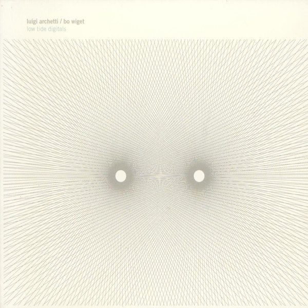
CRVI002866Kim Hiorthøy - Luigi Archetti / Bo Wiget — Low Tide Digitals
2001
2001

CRVI002910Bert Kitchen - Robert Palmer — Pride
1983
1983

CRVI001392Paul Natkin - Lil' Ed & The Blues Imperials
Photograph by Paul Natkin
Photograph by Paul Natkin

CRVI002869Kim Hiorthøy - Skyphone — Fabula
2004
2004

CRVI002870Kim Hiorthøy - Alog — Miniatures
2005
2005

CRVI002888Kim Hiorthøy - Fra Lippo Lippi — Golden Slumbers - The Very Best Of Vol 1 & 2
2025
2025

CRVI002889Kim Hiorthøy - Fra Lippo Lippi — More Golden Slumbers - The Very Best Of, Vol. 2
2025
2025
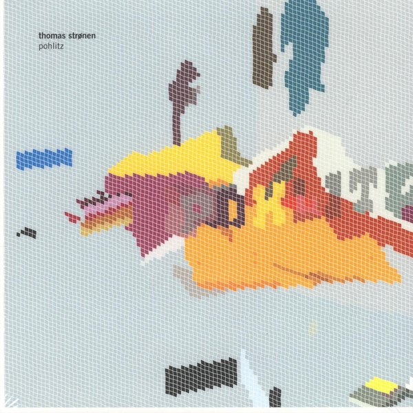
CRVI002871Kim Hiorthøy - Thomas Strønen — Pohlitz
2006
2006

CRVI002872Kim Hiorthøy - Alog — Amateur
2007
2007
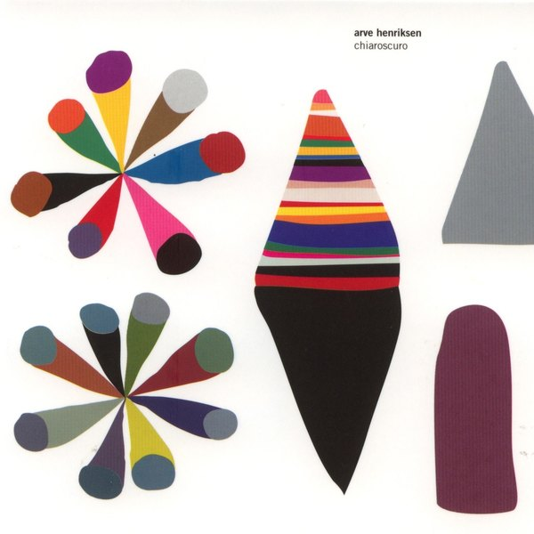
CRVI002868Kim Hiorthøy - Arve Henriksen — Chiaroscuro
2004
2004
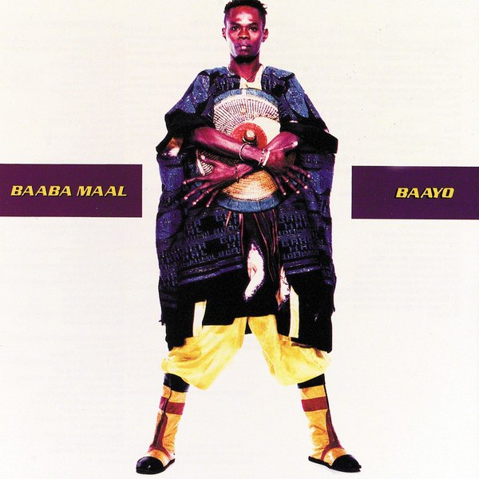
CRVI002895Richard Burbridge - Baaba Maal — Baayo
1991
1991

CRVI002901Jean-Paul Goude - Grace Jones — Island Life
1985
1985
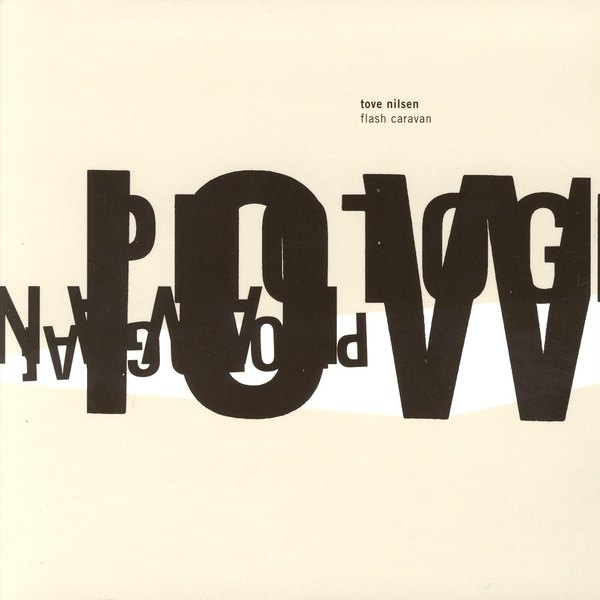
CRVI002864Kim Hiorthøy - Tove Nilsen — Flash Caravan
1998
1998

CRVI001054Takenobu Igarashi - Poster for the 15th Summer Jazz Festival
Poster · 1983
Poster · 1983
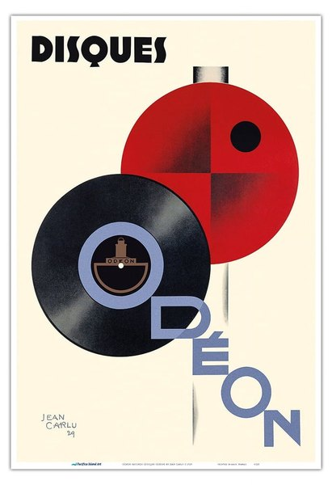
CRVI002849Jean Carlu - Disques Odéon
1929
1929

CRVI002913Unattributed - The Buggles — The Age Of Plastic
1980
1980

CRVI002904Jean-Paul Goude - Grace Jones — Slave To The Rhythm
1985
1985

CRVI001860Unidentified - Score with painted blots

CRVI002905CCS (2) - Jimmy Cliff — The Harder They Come
1972
1972

CRVI002902Jean-Paul Goude - Grace Jones — Living My Life
1982
1982

CRVI000130Koichi Sato - New Music Media, New Magic Media
1974
1974

CRVI002908Reid Miles - Red Garland — Red Garland's Piano
1957
1957

CRVI000787Paul Rand - Jazzways
A Year Book of Hot Music · 1946
A Year Book of Hot Music · 1946

CRVI002867Kim Hiorthøy - Spunk — Filtered Through Friends
2001
2001

CRVI002909Graham Hughes - Robert Palmer — Clues
1980
1980

CRVI002884Kim Hiorthøy - Elephant9 — Arrival Of The New Elders
2021
2021

CRVI002881Kim Hiorthøy - Elephant9 — Psychedelic Backfire I
2019
2019

CRVI000879Maurice Denis - L’Oratorio pour « L’Éternel Printemps »
Oil on joined paper laid down on canvas · 142 × 201 cm · 1904
Oil on joined paper laid down on canvas · 142 × 201 cm · 1904

CRVI000816Seymour Chwast - Blues Project
Offset lithograph · 102.2 × 75.2 cm · 1968
Offset lithograph · 102.2 × 75.2 cm · 1968

CRVI001072David Rudnick - Artwork for black midi
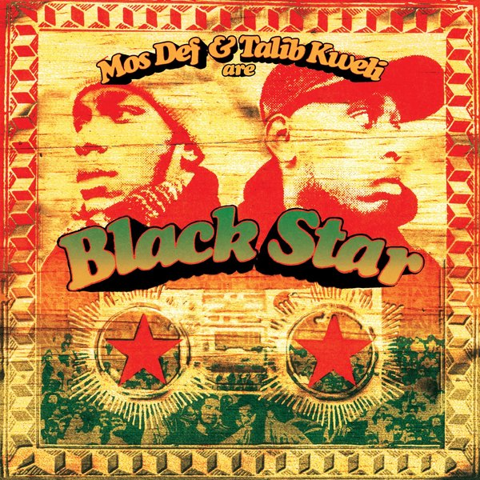
CRVI002898Brent Rollins - Black Star — Mos Def & Talib Kweli Are Black Star
1998
1998
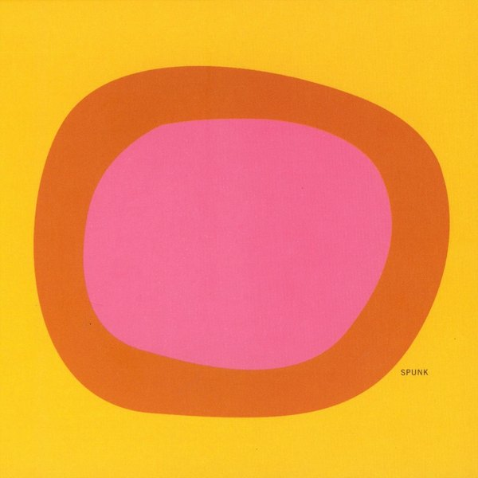
CRVI002865Kim Hiorthøy - Spunk — Det Eneste Jeg Vet Er At Det Ikke Er En Støvsuger
1999
1999

CRVI002894Ball 'n' Chain Associates - Aswad — Aswad
1976
1976

CRVI000123Shigeo Fukuda - Jazz Festival Montreux
19e Festival de Jazz Montreux, 5–20 juillet 1985 · 100 x 70 cm · 1985
19e Festival de Jazz Montreux, 5–20 juillet 1985 · 100 x 70 cm · 1985

CRVI001044Kiyoshi Awazu - mano-dharma concert — Takehisa Kosugi
Poster
Poster

CRVI002893Don Brautigam - Anthrax — State of Euphoria
1988
1988

CRVI002876Kim Hiorthøy - Krokofant — Krokofant
2014
2014

CRVI002938Siegfried Odermatt - Serenaden 89
1989
1989

CRVI002899Neville Garrick - Burning Spear — Man In The Hills
1976
1976

CRVI002890MVM (4) - Fra Lippo Lippi — The Colour Album
2011
2011

CRVI002896Tom Christopher - Bill Evans — California Here I Come
1982
1982

CRVI002879Kim Hiorthøy - Elephant9 — Greatest Show On Earth
2018
2018

CRVI002880Kim Hiorthøy - Fra Lippo Lippi — Rarum 80-95
2018
2018

CRVI002887Kim Hiorthøy - Elephant9 With Terje Rypdal — Catching Fire
2024
2024

CRVI002875Kim Hiorthøy - Elephant9 With Reine Fiske — Atlantis
2012
2012

CRVI002882Kim Hiorthøy - Elephant9 With Reine Fiske — Psychedelic Backfire II
2019
2019

CRVI002916Ann Borthwick - Traffic — On The Road
1973
1973

CRVI002917Tony Wright - Traffic — The Low Spark Of High Heeled Boys
1971
1971

CRVI001069David Rudnick - Poster for Making Time
Poster · Philadelphia
Poster · Philadelphia

CRVI002802Rosmarie Tissi - Serenaden 96
1996
1996

CRVI002807Rosmarie Tissi - Serenaden 93
1993
1993

CRVI002886Kim Hiorthøy - Elephant9 — Mythical River
2024
2024

CRVI002915Paul Francis - The Gene Harris Quartet — Listen Here!
1989
1989

CRVI002883Kim Hiorthøy - Krokofant With Ståle Storløkken & Ingebrigt Håker Flaten — Q
2019
2019

CRVI002885Kim Hiorthøy - Krokofant, Ståle Storløkken, Ingebrigt Håker Flaten — Fifth
2021
2021

CRVI002903Jean-Paul Goude - Grace Jones — Nightclubbing
1981
1981

CRVI000699Mr. Nana Agyq - Stop Making Sense
Hand-painted Ghanaian film poster
Hand-painted Ghanaian film poster

CRVI002877Kim Hiorthøy - Elephant9 With Reine Fiske — Silver Mountain
2015
2015

CRVI000770Paula Scher - Best of Jazz
Lithograph · 91.1 × 68.9 cm · 1979
Lithograph · 91.1 × 68.9 cm · 1979

CRVI002798Rosmarie Tissi - Serenaden 92
1992
1992

CRVI002900Ron Contarsy - Eric B. & Rakim — Paid In Full
1987
1987
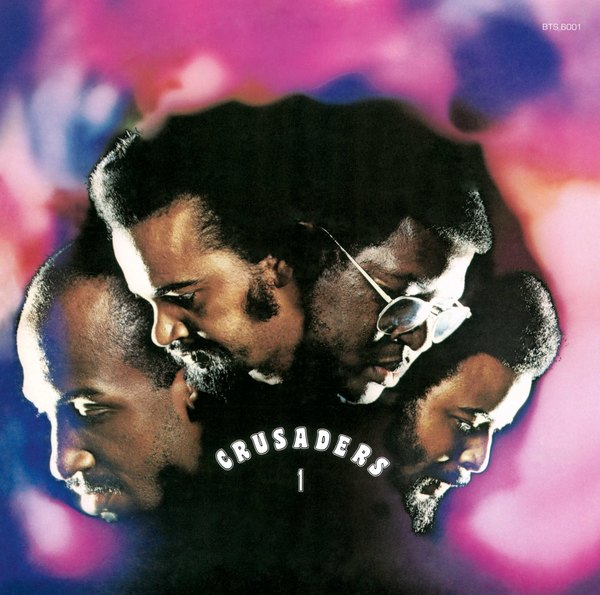
CRVI002914Ron Raffaelli - The Crusaders — Crusaders 1
1972
1972

CRVI002678Kazumasa Nagai - 京都市交響楽団演奏会 (Kyoto City Symphony Orchestra concert)

CRVI002906Tony Wright - Max Romeo & The Upsetters — War Ina Babylon
1976
1976

CRVI002873Kim Hiorthøy - Arve Henriksen — Strjon
2007
2007

CRVI002810Rosmarie Tissi - Internationale Musikfestwochen Luzern
1994
1994

CRVI002859Rosmarie Tissi - 31. Schaffhauser Jazzfestival
2020
2020

CRVI002803Rosmarie Tissi - Serenaden 98
1998
1998

CRVI001071David Rudnick - Poster for Pure Halloween — Dave P, Zillas on Acid, Greg D, Steve Vena
Poster · 2017
Poster · 2017

CRVI002911Moshe Brakha - Robert Palmer — Some People Can Do What They Like
1976
1976

CRVI002874Kim Hiorthøy - Ultralyd — Conditions For A Piece Of Music
2007
2007

CRVI002860Rosmarie Tissi - Serenaden 2002
2002
2002

CRVI002878Kim Hiorthøy - Hedvig Mollestad Trio — Evil In Oslo
2016
2016
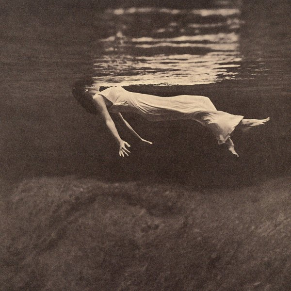
CRVI002897Toni Frissell - Bill Evans — Undercurrent
1962
1962

CRVI002907Michael Trevithick - Nick Drake — Pink Moon
1972
1972

CRVI002892Roe Ethridge - Andrew W.K. — I Get Wet
2001
2001

CRVI001068David Rudnick - Poster for Making Time — Bicep, Avalon, Emerson, Dave P, Z.O.A., S. Vena, Sorted
Poster · Philadelphia · 2018
Poster · Philadelphia · 2018

CRVI002891Unattributed - Julie London — Around Midnight
1960
1960
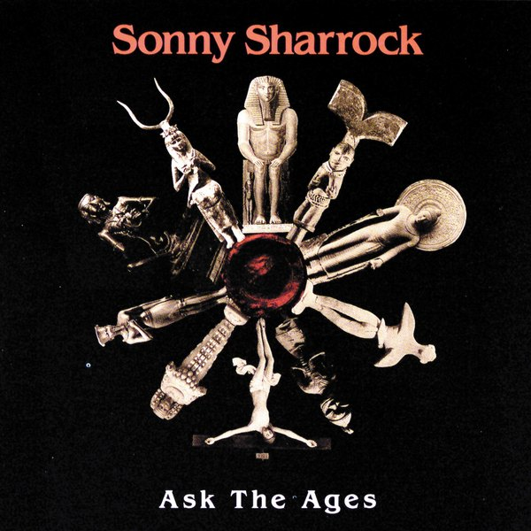
CRVI002912Thi-Linh Le - Sonny Sharrock — Ask The Ages
1991
1991